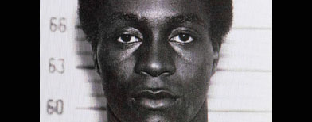

WASHINGTON (AP) — The dead NASA satellite fell into what might be the ideal spot — part of the southern Pacific Ocean about as far from large land masses as you can get, U.S. space officials said Tuesday.
New U.S. Air Force calculations put the 6-ton (5.4-metric ton) satellite's death plunge early Saturday thousands of miles (kilometers) from northwestern North America, where there were reports of sightings. Instead, it plunged into areas where remote islands dot a vast ocean.
NASA says those new calculations show the 20-year-old satellite entered Earth's atmosphere generally above American Samoa. But falling debris as it broke apart did not start hitting the water for another 300 miles (480 kilometers) to the northeast, southwest of Christmas Island, just after midnight EDT Saturday.
 NEWARK, New Jersey (AP) — A 1970s militant who escaped from a murder sentence in New Jersey and carried out one of the most brazen hijackings in U.S. history was captured in Portugal after more than 40 years as a fugitive, authorities said Tuesday. After decades of stagnancy, there was a sudden break in the case when police matched his fingerprint to a resident ID card.
George Wright, 68, was arrested Monday by Portuguese authorities in a town near Lisbon at the request of the U.S. government, said a member of the fugitive task force that had been searching for him for nearly a decade.
Wright was convicted of the 1962 murder of a gas station owner in Wall, New Jersey. Authorities say Wright and three associates had already committed multiple armed robberies on Nov. 23, 1962, when he and another man shot and killed Walter Patterson, a decorated World War II veteran and father of two, during a robbery of the Collingswood Esso gas station in Wall.
Wright received a 15- to 30-year sentence and had served eight years when he and three other men escaped from the Bayside State Prison farm in Leesburg, New Jersey, on Aug. 19, 1970.
The FBI said Wright then became affiliated with an underground militant group, the Black Liberation Army, and lived in a "communal family" with several of its members in Detroit.
On July 31, 1972, Wright, dressed as a priest and using the alias the Rev. L. Burgess, hijacked a Delta Air Lines flight from Detroit to Miami accompanied by three men, two men and three small children from his communal group, including Wright's companion and their 2-year-old daughter, according to Associated Press reports at the time.
When the plane landed at the Miami airport, the hijackers demanded a $1 million ransom — the highest of its kind at the time — to free the 86 people on board. After an FBI agent delivered a 70-pound (32-kilogram) satchel full of money — wearing only a pair of swim trunks, per the hijacker's instructions — the passengers were released, according to AP accounts.
The hijackers then forced the plane to Boston, where an international navigator was taken aboard, and the group flew on to Algeria, where the hijackers sought asylum.
The group was taken in by Eldridge Cleaver, the American writer and activist, who had been permitted by Algeria's Socialist government to open an office of the Black Panther Movement in that country in 1970, after the Algerian president at the time professed sympathy for what he viewed as worldwide liberation struggles.
The hijackers had identified themselves to the passengers as a Black Panther group, police said at a news conference, according to AP reports at the time. They said the hijackers smoked marijuana continuously during the flight.
Algerian officials returned the plane and the money to the U.S. at the request of the American government, and briefly detained the hijackers before letting them stay. Coverage of the hijackers' stay in Algeria said their movements were restricted, and the president ignored their calls for asylum and requests to return them the ransom money.
The group eventually made its way to France, where Wright's associates were tracked down, arrested, tried and convicted in Paris in 1976. France refused to extradite them to the U.S., where they would have faced far longer prison sentences. According to news reports at the time, the defense hailed the light sentences they were given as "a condemnation of American racism" after the jury found "extenuating circumstances" in their actions, apparently agreeing with the defense's assertion that the hijacking had been motivated by "racial oppression in the United States."
But Wright remained at large, and his case was among the top priorities when the New York-New Jersey Fugitive Task Force was formed in 2002, according to Michael Schroeder, a spokesman for the U.S. Marshals Service, who worked with New Jersey's FBI and other agencies on the task force.
The Department of Corrections brought along all its old escape cases nine years ago when the task force began operating, Schroeder said, and investigators started the case anew, never taking a prolonged break from working on it for the past nine years.
They looked at reports from the 1970s, interviewed Wright's victims and the pilots of the plane he hijacked. They had age-enhanced sketches made and tried to track down any communications he may have made with family in the U.S.
The address in Portugal was one of several on a list of places they wanted to check out. But Schroeder said there was nothing about it that made it seem especially promising. "It was another box to get checked, so to speak," he said.
That changed last week, when details started falling into place with the help of authorities there.
"They have a national ID registry," Schroeder said. "They pulled that. That confirmed his print matched the prints with the DOC. The sketch matched the picture on his ID card."
By the weekend, U.S. authorities were on a plane to Portugal. And Monday, Portuguese police staking out his home found him.
Schroeder said he has not been told what, if anything, Wright said when he was caught.
Wright made an initial court appearance in Portugal on Tuesday, according to Justice Department Spokeswoman Laura Sweeney. He was arrested for purposes of extradition on the state of New Jersey's homicide charge, and would serve the remainder of his sentence on that charge if returned to the U.S.